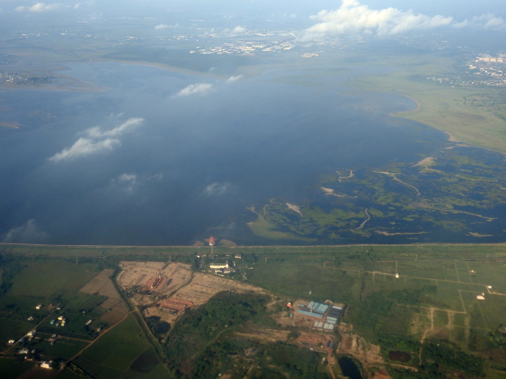

Chembarambakkam

Chembarambakkam lake was known as Puliyur Kottam. It is one of the 24 kottams (villages) that existed even during the later Chola period in Thondai Mandalam which had Kanchipuram as its headquarters. The lake was built by Rajendra Chola, the son of Rajaraja Chola.[2]
The full tank level is 85.40 ft (26.03 m). The full capacity of the lake is 3,645 million cubic ft (3.64 Tmc ft)(103215 million liters)[3].However, acute sedimentation has eroded more than 40% of its water holding capacity.[4] There is an ancient Shiva temple and Kanni Koil located here.[citation needed]